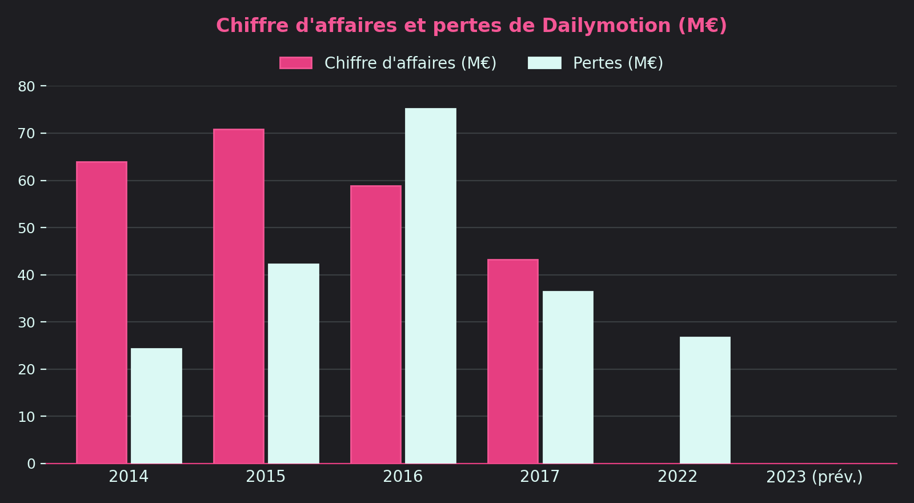
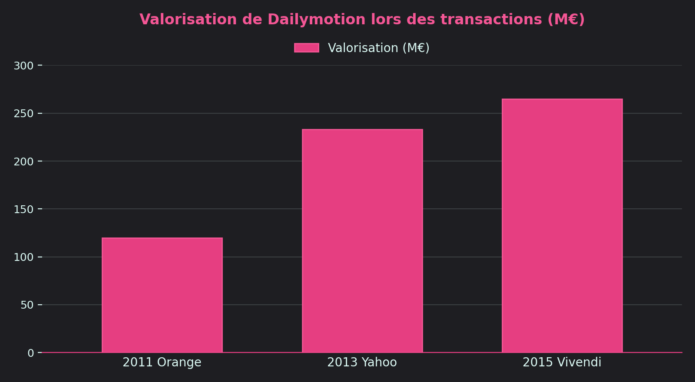
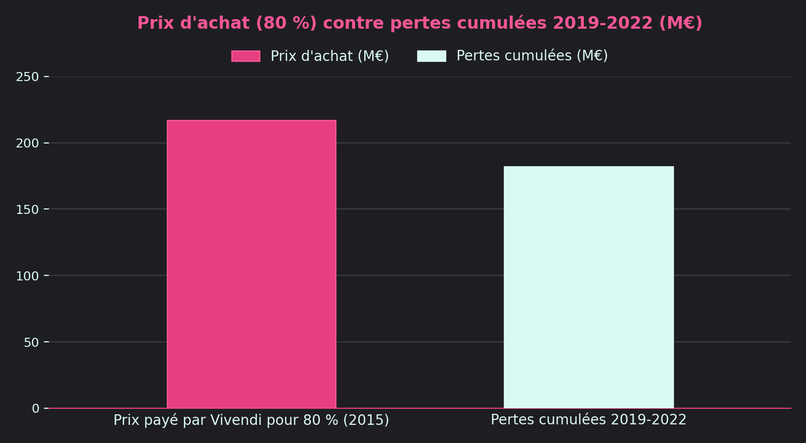

Jusqu'en 2015, Dailymotion progresse vite : son chiffre d'affaires augmente de plus de 30 % par an depuis 2012, porté par une audience mondiale en forte croissance. Après le rachat par Vivendi en 2015, la plateforme change de stratégie : elle supprime les contenus piratés, violents ou pour adultes, traque le trafic généré par des robots et se recentre sur des contenus premium et éditorialisés. Ce nettoyage fait chuter l'audience (de 148 millions de visiteurs uniques mi-2015 à 77 millions fin 2017), donc les revenus publicitaires. À cela s'ajoutent la concurrence écrasante de YouTube et Facebook, et une transition difficile après le changement de direction : une grande partie des équipes a quitté l'entreprise. Les pertes se creusent car les coûts de ce relancement continuent pendant que les recettes diminuent. Pendant la période suivante, Dailymotion poursuit sa reconversion vers les partenariats avec des éditeurs de médias (modèle B2B), ce qui explique des pertes qui restent élevées avant de se réduire progressivement.
En 2011, Orange rachète 49 % de Dailymotion pour environ 62 M€, ce qui valorise l'entreprise à environ 120 M€. L'objectif est de répondre à la demande croissante de vidéos sur mobile, alors que Dailymotion n'est encore qu'une start-up. En 2013, Yahoo prépare une offre pour 75 % de l'entreprise, sur la base d'une valorisation d'environ 300 millions de dollars. Cette offre n'a jamais abouti : le gouvernement français s'y est opposé car il ne voulait pas qu'un groupe américain contrôle l'une des meilleures start-up du pays. En 2015, Vivendi paie 217 M€ pour 80 %, soit une valorisation de 265 M€. Le prix s'explique par la croissance du chiffre d'affaires (64 M€ en 2014), par une audience de plusieurs milliards de vidéos vues par mois, et par la stratégie de Vivendi de se recentrer sur les médias et les contenus. Le gouvernement, qui avait déjà bloqué Yahoo et fait renoncer le fonds hongkongais PCCW, privilégiait une solution européenne, ce qui a limité la concurrence entre acheteurs étrangers.


Vivendi a acheté Dailymotion en 2015 avec l'ambition d'en faire la plateforme de diffusion de tous ses contenus (Canal+, Universal, etc.) et un concurrent mondial de YouTube. Ce projet n'a pas donné les résultats attendus : l'audience a baissé, les revenus aussi, et Dailymotion a continué à perdre de l'argent. Vivendi a même dû déprécier la valeur de sa filiale dans ses comptes (68 M€ pour la seule année 2019), preuve que l'entreprise valait moins que prévu. Les pertes cumulées sur 2019-2022, d'environ 182 M€, représentent ainsi plus de 80 % du prix payé en 2015 (environ 217 M€) : Vivendi a financé le redressement de la plateforme sans en retirer, pour l'instant, la rentabilité espérée.